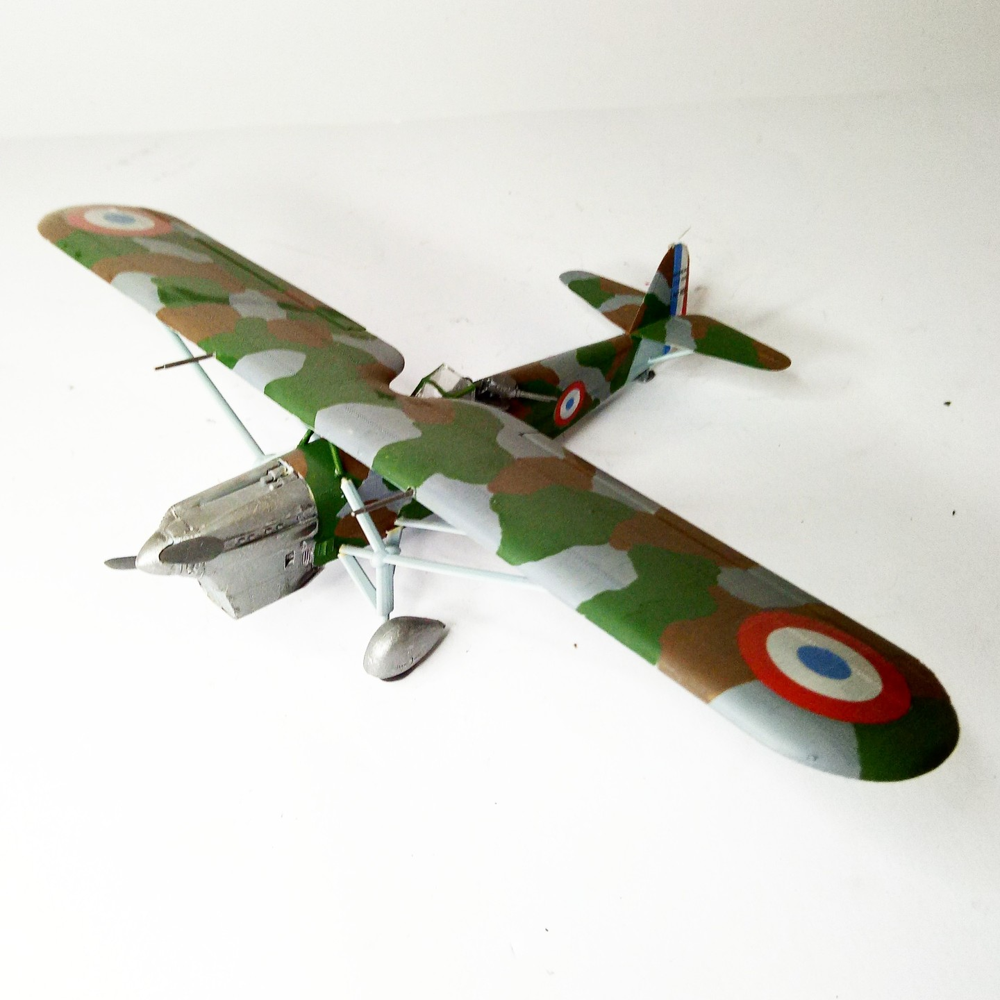

Aerei · scale model archive
Dewoitine D 510
Dewoitine D 510 — Kit: Heller, Scale: 1/72. GC 2/1, 3 Esc. N-6 0-4 (N.317) Juni 1940 World War 2»Battle of France #1/72 #Heller #plasticmodels

Photo gallery
English description
GC 2/1, 3 Esc. N-6 0-4 (N.317) Juni 1940 World War 2»Battle of France
#1/72 #Heller #plasticmodels
Descrizione italiana
GC 2/1, 3 Esc. N-6 0-4 (N.317) giugno 1940 Seconda guerra mondiale»Battaglia di Francia.